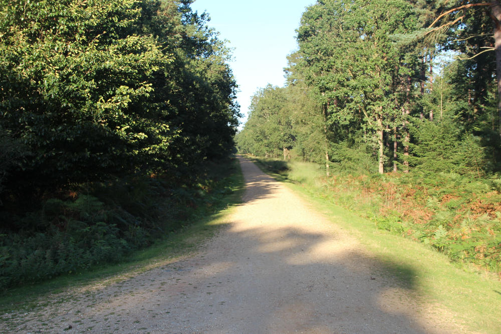

The New Forest is a National Park on the South coast of England, which despite its name was originally created in 1079 by William the Conqueror. It covers an area of over 200 square miles, and is one of the most important areas in the UK and Western Europe for its biodiversity. It is also well known for the pasturing of ponies, cattle, pigs and donkeys in the open Forest by local inhabitants known as commoners.
The New Forest has a network of over 100 miles of off-road tracks suitable for walkers and cyclists.
Cicadas like sunny south-facing clearings, so paths around the park are the ideal place to check. We don't need you to visit any specific spots, just visit the New Forest as normal, and if you find yourself in a sunny spot on a warm still day, use this app to record a survey to check that there isn't also a cicada there.

It is important that you stick to the paths, because the season when the cicada sings is also the season when many ground nesting birds are laying their eggs, and you do not want to unintentionally frighten the adults away, leaving the eggs or young vulnerable to cold and predators.
You can find more information about visiting the New Forest, and how to help care for it, on the webpages of our project partner, the New Forest National Park Authority.